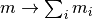

Debye decomposition resistivities¶
complex¶
real and imaginary parts¶
Derivatives¶
Relating peak frequency of imaginary part to relaxation time¶
Notes:
Determine the frequency maximum of the negative of the imaginary part using the first derivation:
Peak relaxation times¶
Peak relaxation times for the conductivity (a.k.a. Cole-Cole, CC) and the resistivity (a.k.a. Pelton, P) formulation are related by:
The relation hold for both the Cole-Cole model and the Debye model (c=1). Additionally, they also hold for the decomposition approach, here the chargeability has to be replaced by the total chargeability: .